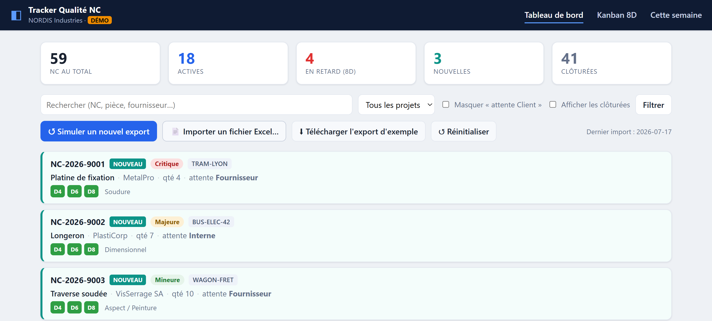

Ingénieur qualité & industrialisation · Développeur
Ressaisies manuelles, portails clients pénibles, indicateurs faits à la main, données éclatées dans dix fichiers Excel… Je conçois des outils métier simples et fiables qui font gagner du temps à vos équipes qualité et production.
Le quotidien de beaucoup de services qualité et industrialisation.
Recopier, consolider, remettre en forme des exports, chaque semaine, à la main.
Peu ergonomiques, sans alerte, où l'information importante se perd.
Des KPI construits à la main, longs à produire et sujets aux erreurs.
La bonne info existe… répartie dans dix fichiers et trois logiciels.
« Je n'ai pas besoin d'un cahier des charges : je comprends déjà votre métier. »
La plupart des développeurs savent coder mais ne connaissent pas votre terrain. Il faut tout leur expliquer — un 8D, un PPAP, une non-conformité, l'AMDEC, l'IRIS… et le besoin se perd en traduction.
Moi, j'ai les deux casquettes : plus de 10 ans dans l'industrialisation, la qualité et l'amélioration continue, et les compétences techniques (VBA, Python, SQL, IA). Vous m'expliquez votre problème, j'ai déjà la solution en tête.
Du diagnostic rapide à l'outil sur-mesure, en passant par l'IA appliquée.
Une demi-journée à une journée pour identifier vos tâches chronophages et repartir avec une feuille de route priorisée. Sans engagement sur la suite.
Des outils concrets qui automatisent et fiabilisent vos processus.
L'intelligence artificielle appliquée à la qualité, dans le respect de la confidentialité (IA locale possible).
Chaque outil est pensé pour un objectif simple : vous faire gagner du temps et fiabiliser vos données. On chiffre toujours le gain avant de se lancer.
Un exemple de ce que je conçois.

Une application web qui remplace le suivi éparpillé dans plusieurs fichiers Excel par un outil unique : tableau de bord, indicateurs d'avancement 8D, vues Kanban, détection automatique des nouveautés à l'import, pièces jointes centralisées.
Python · Flask · SQLite — 100 % local, données confidentielles par conception.
Ingénieur de formation (Master en Sciences des Polymères), j'ai plus de 10 ans d'expérience dans l'industrialisation, la qualité, l'amélioration continue et la gestion de projets industriels — au plus près du terrain.
En parallèle, j'ai développé de solides compétences en programmation et automatisation (VBA avancé, Python, SQL, HTML/CSS, IA appliquée). Cette double culture — métier et technique — me permet de concevoir des outils vraiment adaptés aux besoins de la qualité et de la production.
Ma conviction : la digitalisation n'a de valeur que si elle est simple, fiable et utile au quotidien.
Un projet, une tâche chronophage à automatiser, ou simplement une question ? Écrivez-moi, je réponds rapidement.
Vous préférez LinkedIn ? Voir mon profil.